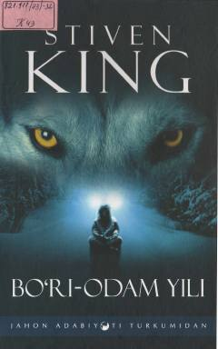

BYTaker Millz shaharchasida oy to'lishgan kunda sodir bo'ladigan sirli qotilliklar haqidagi hikoyalar to'plami.
Kitob mashhur yozuvchi Stiven Kingning o'quvchilarni hayratga soluvchi hikoyalaridan iborat to'plamidir. Asarda Taker Millz shaharchasida oy to'lishgan kunda sodir bo'ladigan sirli va dahshatli qotilliklar haqida hikoya qilinadi. Shahar ahlining qo'rquvga tushishi va bo'ri-odam haqidagi mish-mishlar voqealar rivojini yanada qiziqarli qiladi.